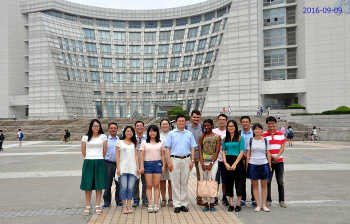
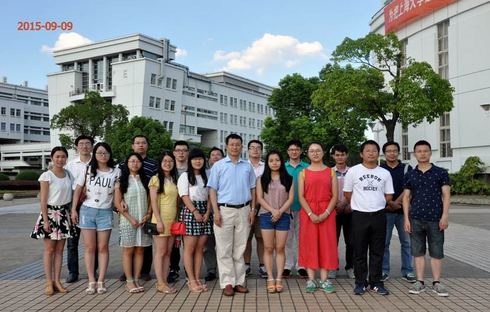
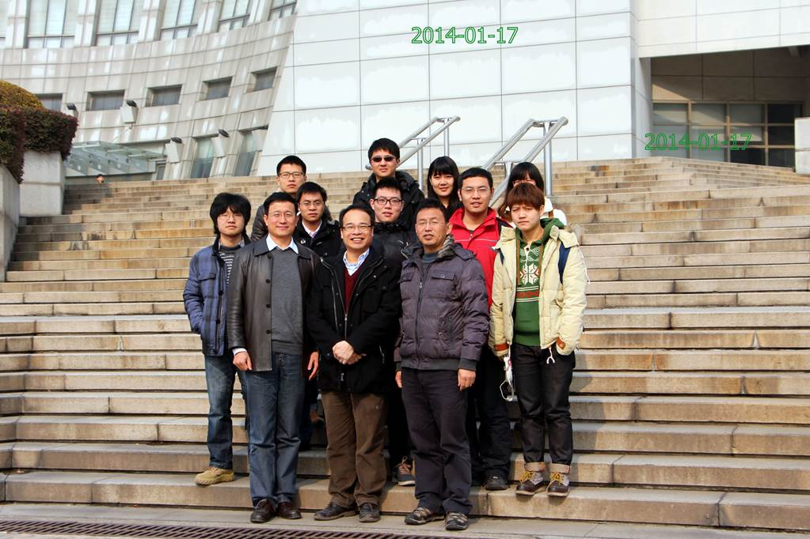
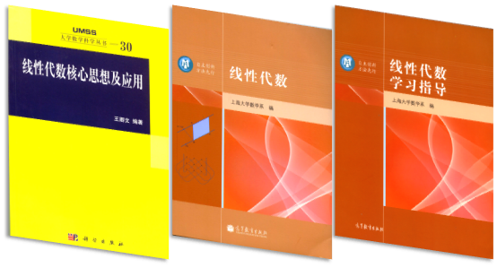

Teaching Courses
Bachelor Degree Courses
|
1. Higher
algebra 2. Linear algebra |
3. Probability theory 4. Matrix and tensor 5. Abstract algebra |
6. The explorations and discoveries of mathematics |
|
Master Degree Courses 1. Matrix theory 2. Higher matrix algebra 3. Representation of groups and algebras 4. Commutative algebra 5. Classical groups 6. Lie groups 7. Matrix equations PhD Degree Courses 8. Algebra 9. Matrix analysis 10.Quantum computing |
 |
Graduated PhD Students
|
1. Yu Shaowen 2. Chang Haixia 3. Zhang Huasheng 4. Zhang Qin 5. Wu Zhongcheng 6. Song Guangjing 7. Dong Changzhou 8. Bao Yubao |
9. Israr Ali Khan 10. Jiang Jing 11. Zhang Xiang 12. Yu Guihai 13. Wang Li 14. Liu Xin 15. Lin Yong 16. Yu Juan |
17. Abdur Rehman 18. He Zhuoheng 19. Li Lei 20. Huang Shaowu 21. Nie Xiangrong 22. Liu Juntong 23. Xu Xiangjian |
Graduated Master Students
|
1. Yu Shaowen 2. Chang Haixia 3. Qin Feng 4. Wu Huayu 5. Wu Zhongcheng 6. Song Guangjing 7. Zhang Fei 8. Li Chengkun 9. Zhou Yan 10. Ding Yuhan 11. Ren Xingwei 12. Liu Xin 13. Nie Xiangrong 14. Yan Shujun |
15. Di Meijing 16. Zheng Junqing 17. Zhu Hongyi 18. Zhang Xia 19. Hu Renjie 20. He Zhuoheng 21. Chen Di 22. Guan Yu 23. Xu Huan 24. Ding Xiufang 25. Wang Ziwen 26. Deng Zhaohua 27. Li Jing 28. Shi Zhiwei |
29. Qin Yangyang 30. Xu Jinwei 31. Yang Xiaoxiao 32. He Zhentao 33. Li Jie 34. Li Yijun 35. Sun Fangfang 36. Xie Mengyan 37. Deng Ye 38. Liu Jialing 39. Kuai Ligang 40. Wang Huihui 41. Wu Yiling 42. Wu Huayu |
|
Postdocts: 1. Duan Xuefeng 2. Zhang Jiao 3. Sun Jiangcai 4. Yuan Shifang 5. Tong Zhaojia 6. Wang Yuchao 7. Song Caiqin 8. Peng Jingjing 9. Duanmei Zhou 10. Zhu Huihui
1. Prof. Ning Qun (Suzhou University) |
 |
2. Prof. Lian Dezhong (Longyan University, Fujian)
3. Prof. Zhang Xiang (Guizhou Normal University)
4. Professor Edgar Pereira (University of Beira Interior, 6200-001 Covilha, Portugal)
5. Professor ?zlem Esen (Anadolu University, Yunusemre Kampusu, Turkey)
|
Current PhD Students 1. Adda Farouk 2. Li Tao 3. Zhang Xinfang 4. Ikram Ouziala 5. Liu Longsheng 6. Xie Mengya Current Master Students 1. Kang Simo 2. Lv Ruyuan 3. Wang Xiangxiang 4. Wang Xiao 5. Zhang Chongquan 6. Wang Ruonan 7. Xu Yangfan |
 |
|
Published Books 1. An Instructor of Linear Algebra, Higher Press, Beijing, 2016. 2. The key ideas of linear algebra with applications, Scientific Press, Beijing, 2012. 3. Linear Algebra, Higher Press, Beijing, 2012. |
 |
Teaching Award
The first prize of Shanghai Municipal Outstanding Teaching Achievement Award 2018